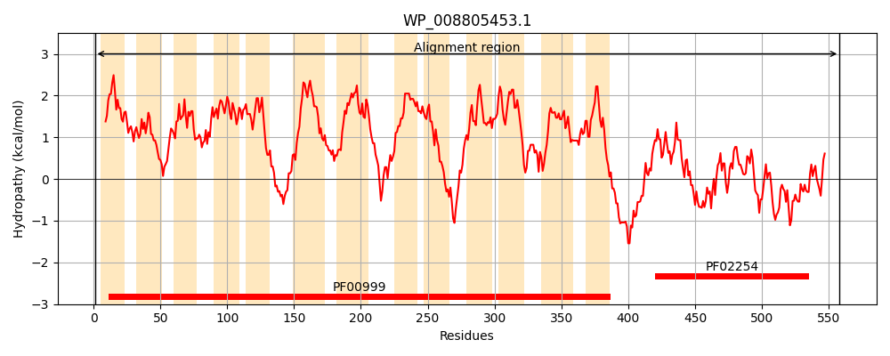
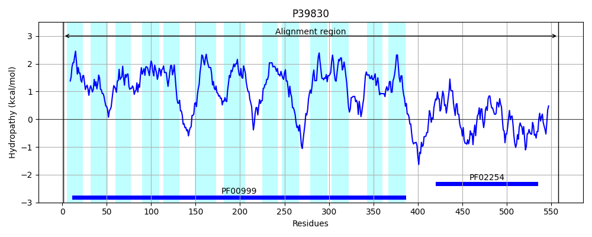
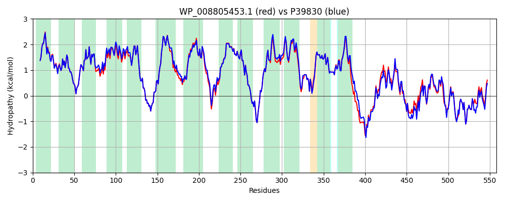

Hit Accession: P39830
Hit TCID: 2.A.37.1.5
Hit Description: gnl|BL_ORD_ID|10307 gnl|TC-DB|P39830|2.A.37.1.5 Inner membrane protein ybaL OS=Escherichia coli (strain K12) GN=ybaL PE=1 SV=2
Mach Len: 558
e:0.000000
Query TMS Count : 13
Hit TMS Count: 13
TMS-Overlap Score: 13.000000
Predicted Substrates:None
BLAST Alignment:
Score: 2564 , Bit scores: 992 bits, E-value: 0.0e+00, Alignment length: 558, Percentage identity: 92
Query: 1 MHHATPLITTIVGGLVLAFILGMIANKLRISPLVGYLLAGVLAGPFTPGFVADTKLAPELAELGVILLMFGVGLHFSLKDLMAVKSIAIPGAIAQIAVATLLGMALSAALGWSLMTGIVFGLCLSTASTVVLLRALEERQLIDSQRGQIAIGWLIVEDLVMVLTLVLLPAIAGMTEKGDVGFASLALDLGITIGKVVAFIAIMMLVGRRLVPWIMSRSAATGSRELFTLSVLALALGIAFGAVELFDVSFALGAFFAGMVLNESELSHRAAHDTLPLRDAFAVLFFVSVGMLFDPMVLVQQPLAVLATLAIIIFGKSAAAFFLVRMFGHSPRTALTIAASLAQIGEFAFILAGLGMALNLLPQAGQNLVLAGAIISIMLNPVLFTLLEKYLDKTETLDEQTLEEVLEDEKQVPVDICNHALLVGFGRVGSLLGEKLMAQGIPLVVVETSRTRVDELRERGISAVLGNAANEEIMELAHLDCARWLLLTIPNGYEAGEIVASAREKCPNIEIIARAHYDDEVDYIIDRGANQVVMGEREIARAMLQLLETPPAGEVVTG 558
MHHATPLITTIVGGLVLAFILGM+ANKLRISPLVGYLLAGVLAGPFTPGFVADTKLAPELAELGVILLMFGVGLHFSLKDLMAVK+IAIPGAIAQIAVATLLGMALSA LGWSLMTGIVFGLCLSTASTVVLLRALEERQLIDSQRGQIAIGWLIVEDLVMVLTLVLLPA+AGM E+GDVGFA+LA+D+GITIGKV+AFIAIMMLVGRRLVPWIM+RSAATGSRELFTLSVLALALG+AFGAVELFDVSFALGAFFAGMVLNESELSHRAAHDTLPLRDAFAVLFFVSVGMLFDP++L+QQPLAVLATLAII+FGKS AAFFLVR+FGHS RTALTIAASLAQIGEFAFILAGLGMALNLLPQAGQNLVLAGAI+SIMLNPVLF LLEKYL KTETL+EQTLEE +E+EKQ+PVDICNHALLVG+GRVGSLLGEKL+A IPLVV+ETSRTRVDELRERG+ AVLGNAANEEIM+LAHL+CA+WL+LTIPNGYEAGEIVASAR K P+IEIIARAHYDDEV YI +RGANQVVMGEREIAR ML+LLETPPAGEVVTG
Sbjct: 1 MHHATPLITTIVGGLVLAFILGMLANKLRISPLVGYLLAGVLAGPFTPGFVADTKLAPELAELGVILLMFGVGLHFSLKDLMAVKAIAIPGAIAQIAVATLLGMALSAVLGWSLMTGIVFGLCLSTASTVVLLRALEERQLIDSQRGQIAIGWLIVEDLVMVLTLVLLPAVAGMMEQGDVGFATLAVDMGITIGKVIAFIAIMMLVGRRLVPWIMARSAATGSRELFTLSVLALALGVAFGAVELFDVSFALGAFFAGMVLNESELSHRAAHDTLPLRDAFAVLFFVSVGMLFDPLILIQQPLAVLATLAIILFGKSLAAFFLVRLFGHSQRTALTIAASLAQIGEFAFILAGLGMALNLLPQAGQNLVLAGAILSIMLNPVLFALLEKYLAKTETLEEQTLEEAIEEEKQIPVDICNHALLVGYGRVGSLLGEKLLASDIPLVVIETSRTRVDELRERGVRAVLGNAANEEIMQLAHLECAKWLILTIPNGYEAGEIVASARAKNPDIEIIARAHYDDEVAYITERGANQVVMGEREIARTMLELLETPPAGEVVTG 558 | Protein Hydropathy Plots: |
|---|
|  |  |
Pairwise Alignment-Hydropathy Plot:
|
|---|
|  |